To this point, all the exercises have been small enough to fit into a single JavaScript file without struggling too much. We've separated the different parts of our code by using block comments, and we've scrolled a lot.
But real-life projects tend to have much more code. Having everything as tangled as spaghetti in one file soon becomes an issue. For example:
We need a way to structure our code in a more maintainable way.
Though this course is dedicated to Three.js, we are going to learn JavaScript concepts like classes and modules for this lesson. They will become very handy when it comes to organizing our code.
In the following parts of the lesson, I will show you how I (Bruno Simon) like to organize my code. This is based on very personal preferences that you might not agree with, and you might be right. Don't hesitate to create your own structure and only take what you think is good from the following advice.
In the rest of the course, for simplicity's sake and in case some of you are not comfortable with what you will learn here, we won't be using the structure presented in this lesson. We will keep coding all the JavaScript in one file (spaghetti style). But if you feel comfortable trying the new structure in this lesson, you can adapt the following lessons to the new way or to your own structure.
Modules are one of the most important features used to structure our code. The idea is to separate our code into multiple files and import those files when we need them.
We actually already use modules when we import dependencies like this:
But this time, we are going to import our own code.
When using Webpack, all our imports are merged into one file that will work on most browsers. This way, we don't even have to worry about the compatibility of modules.
Furthermore, modules are now natively supported by most modern browsers without using a bundler. But, we aren't going to use that native support for a couple of reasons:
We are going to ignore the current state of our project for a moment to focus on syntax.
In /src/script.js, comment out everything (even the CSS import).
In the /src/ folder, create a test.js file. We are going to add content to that file and import it into script.js.
A file can export one or multiple things, but, to keep things simple, I like to export only one thing per file.
To do that, write the following code in test.js :
And then, to import this code into /src/script.js, write the following code:
And that's it. Check your console and you should see Hello modules.
One very important detail is that the path starts with ./. When we refer to a file, we need to do it that way, otherwise Webpack will try to find it in the node_modules folder.
Here, we exported a string, which is not very useful. But we can export functions:
We can also export objects:
And we can also export classes, but we are going to see that later.
The export instruction can also be done after the object:
And as I said earlier, one file can export multiple things:
By exporting multiple things, we don't need to import everything in the module. We can select what we want:
And this is actually how Three.js classes can be imported without importing the whole library.
Currently, when we import Three.js, we do:
And everything that is being exported from three will be available in the THREE variable. But we could have imported specific classes like this:
But again, we are not going to use that feature and each one of our files is going to export only one thing.
Now that we know how to separate our code into multiple files, what should we export and import exactly?
We are going to use classes for exporting and importing. Classes allow us to use Object-Oriented Programming in JavaScript.
Classes are supported by most browsers (Can I Use), so we can use them without trouble.
Remove the code related to modules (even the test.js file) and leave the rest of the code commented. We are going to focus on the classes now.
To create a class, use the following syntax in /src/script.js:
If you test this code now, nothing will happen because our class is currently empty and we haven't used it anywhere else in our code. But, in the classes in the example below, we are going to put some code between the {}.
Also, you should note that class names, by convention, usually use the PascalCase where the first letter of each word is in uppercase.
A class is like a blueprint. We can use that blueprint to create an object. We can also use that blueprint to create multiple objects.
Let's imagine that our class is a blueprint to create a robot:
To create a robot from that blueprint, we would need to write this:
And that's it. Though this class does nothing and thus our robot variable does nothing, we created a robot out of our Robot class.
The robot variable is what we call an instance of the class.
As already noted, we can also create multiple instances of that class:
All of those robots will be based on the same class.
That's cute, but our robots can't do anything. We can add functions to our robots like this:
Functions inside of a class are called methods and every instance of the class will have these methods.
Now, each one of our robots can say "hi".
But how impolite it is for those robots to not say "thank you" to their creator for being created!
If you add a method named constructor to the class, this method will be called automatically when instantiated:
Now, every robot being created with this class will say "Thank you creator" automatically when instantiated.
We can also provide parameters to that constructor.
To illustrate that, we are going to give a name to each one of the robots:
And to retrieve those names in the class, we can add the parameter to the constructor function:
But what if we also want the robot to provide his name when saying "hi"?
We already sent the name to the constructor and we don't want to send it again to the sayHi function. What we want is for the robot to remember his name.
We can do that with this. Write the following code:
this is what we call the context. Though the class is the same for each instance, the context will be different for every instances of the class.
In our case, this will be the robot itself.
this is accessible in every method which is why we can now retrieve the name of the robot in the sayHi function:
name is what we call a property of the class. We can add more properties:
We can also access properties from the instance outside of the class:
Methods are also available from the context and we can ask the robot to say "hi" automatically in the constructor:
Inheritance is like creating a class based on another class. In a way, we create a blueprint based on another blueprint.
All the methods of the base class will be available in the new class.
To illustrate that, let's add a feature to our robots so that they can fly. But not every robot can fly like Wall-E. Still, every robot needs a name and legs.
To create a class based on another, use the extends keyword. Create the following class after the Robot class:
We have created a FlyingRobot class which we can now use for robots that can fly:
Currently, this FlyingRobot doesn't add anything to the Robot class, but we can add methods like this:
Robots instantiated with FlyingRobot will still be able to say "hi", but now they will also be able to take off and land:
But if we try to do the same with Wall-E:
We get an error. Wall-E isn't an instance of FlyingRobot and thus can't take off.
Providing a method with the same name to the FlyingRobot class will override what the method does in the Robot class:
But if you want to provide a different constructor, you have to start the method with super() and send the needed parameters to it:
super corresponds to the base class (Robot) and using super() is like calling the base constructor so that everything we do in the base constructor will be done in the new class, too.
We can also use super to call methods from the base class. As an example, we can make the robot say "hi" like it use to and then, in another log, say that it is a flying robot:
But this approach tends to complicate the code.
That's it for classes.
The idea here is that we are going to separate our code into files and each one of these files will export a different class.
To illustrate that with the robots, create a /src/Robot.js file and put the Robot class in it, but with an export default at the beginning:
Now create a /src/FlyingRobot.js file and put the FlyingRobot class in it, but with an export default at the beginning:
Before importing them, however, we need to fix an issue.
FlyingRobot inherits from Robot, but Robot isn't available in the file. We need to first import that class to refer to it.
Add the following import:
In /src/scripts.js, we can now import and use these classes:
And our code to create robots becomes suddenly very simple.
At first, all of this might seem a bit complicated, but your code will become much more maintainable and you'll be able to reuse it in different projects simply by copying the classes you need.
It's time to use this new knowledge in our project.
Remove the code that we have added above and delete the files related to the robots.
If you uncomment the project code, you'll see a simple scene with a fox on a floor.
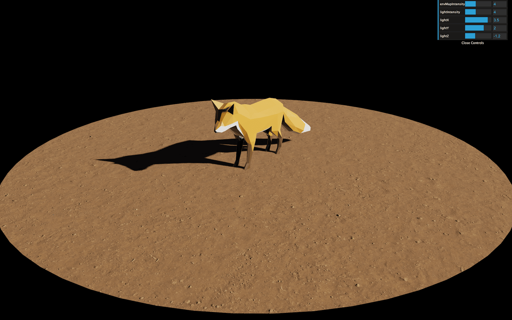
We are going to keep the existing code and move it into classes piece by piece.
Comment the whole code again except the style (import './style.css').
A good practice is to put the whole experience inside a main class that will then create everything else. This is particularly useful if your WebGL experience is part of a bigger website with HTML content, other pages, etc.
The code related to your experience will be separate from the rest of your code, but still accessible through the class and all the methods and properties you provide within that class.
As for the name of that class, I like to use Experience but it can be MySuperGame, WebGLAwesomeStuff, Application or whatever.
In the /src/ folder, create an Experience/ folder and, in that /src/Experience folder, create an Experience.js file.
In that file, export a class as follows:
All classes related to the experience will be in that folder.
In /src/script.js, we can import and instantiate that class:
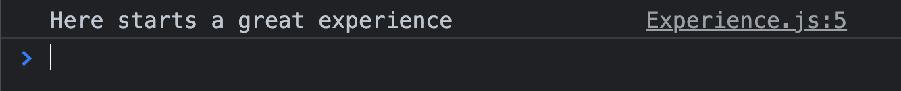
Sometimes, it's useful to be able to access the experience right from the console. But the current scope makes that impossible.
What we can do is save the instance in window. To do that, we can use the context right inside the constructor:
Now we can access the experience right from the console by typing window.experience or even experience because window is implicit in JavaScript (what a weirdo).
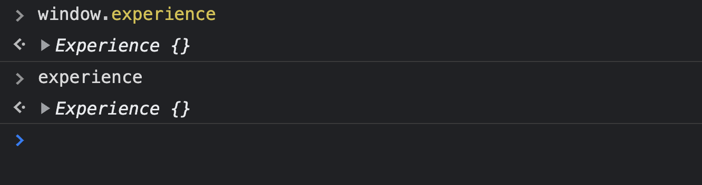
Be careful, this is a trick that not everybody will like and if you have multiple experiences, the last one will override the previous ones.
When instantiating the Experience, we are going to send the canvas as a parameter so that other developers using our class in different situations will be able to choose what <canvas> they want to use.
When instantiating in /src/script.js, use querySelector() to send the canvas parameter:
And, in the class, save it as a property:
That's the only parameter we will need in this lesson, but you can send any parameter you want to change the experience.
There are other classes that are handy to have throughout the project, and that will probably turn out to be useful in your future projects. These classes are not necessarily related to WebGL or Three.js, as you will see. That is the reason why we are going to put them in the /src/Experience/Utils/ folder which we will create now.
The first useful class is the one that will handle the sizes of the experience. It'll include the width and the height of the viewport as well as the pixel ratio of the screen.
We are going to update these values when a resize occurs, but we are also going to warn the experience of that resize.
In the /src/Experience/Utils/ folder, create the Sizes.js class:
And instantiate it in the Experience class:
In that Sizes class, add the usual width, height and pixelRatio as we did before, but save them as properties:
Then listen to the resize event and update those properties:
Here, we assume that the experience always fills the viewport. If that's not the case, you'll have to do things differently.
We can now access the width, height and pixelRatio from the Experience class:
At some point, we will also have to update other values like the camera or the renderer when a resize occurs. We could listen to the resize event on window like we just did, but instead, we are going to use the Sizes class to warn the other classes about that change.
What we are going to do now is make a little change to our Sizes class so that it can trigger events. Later, we are going to listen to those events.
To do that, we are going to make that class inherit from an EventEmitter class.
Add the EventEmitter class from below to the /src/Experience/Utils/ folder:
In case you are wondering, I wrote this class years ago and I've been using it on dozens of projects. We are not going to explain the code, but we are going to explain the methods we need and will use.
Make the Sizes class inherit from that EventEmitter class. Don't forget to import it and to use the super() function at the start of the constructor:
Nothing seems to have changed, but now, our Sizes class has access to the EventEmitter methods.
There are two methods that we need.
The on(...) method will listen to events just like addEventListener() and the trigger(...) method will trigger those events. We are going to trigger events from inside the class and listen to those events from outside the class.
In the resize event callback of the Sizes class, trigger an event named resize:
You can choose any name for the event, but resize seems appropriate.
In the Experience class, listen to the resize event on the instance of the Size class with the same event name:
Resize the viewport and you should see A resize occurred in the console.
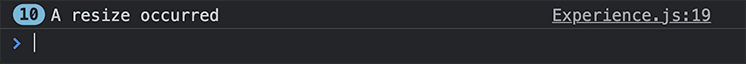
Later, we will have more instructions on what to do when a resize occurs, which is why we should put it in a separate method. Create a resize() method and call that method when the resize event occurs:
We can't send the resize method directly as the parameter (this.sizes.on('resize', this.resize)) because the context (this) will be the Sizes instance and not the Experience instance. This is a classic context issue that we can fix with binding, but we are not going to cover that here. Instead, we will just call resize from inside an arrow function.
That's it for our Sizes class.
Another very useful class is the one handling the time. This class will work a bit like the Clock class of Three.js.
It will save:
The class will also trigger an event on each frame so that we can listen to that event and update the whole experience.
In the /src/Experience/Utils/ folder, create the Time.js class and inherit from the EventEmitter class:
Instantiate that class in the Experience class as we did for the Sizes class:
Create the following properties in the Time.js class:
start will contain the timestamp when the experience starts and will stay the same.current will contain the current timestamp and will change on each frame.elapsed will contain how much time was spent since the start of the experience.delta will contain how much time was spent since the previous frame. We set it as 16 by default which is close to how many milliseconds there is between two frames at 60fps.Then we can create a tick() method and do the same loop as we did at the beginning of the course with window.requestAnimationFrame(...):
You should see a bunch of tick logs in the console.
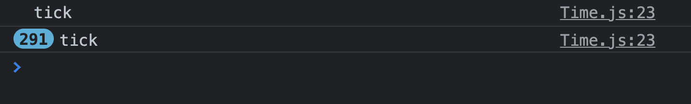
We could have called the tick method immediately in the constructor without the window.requestAnimationFrame, but this would result in a delta equal to 0 on the first frame.
We can now update the current time, calculate the delta time and update the elapsed time:
You can test those values to make sure that they are right. They will be in milliseconds, but you can do some math to change them to seconds if you prefer.
Finally, we can trigger a tick event:
And listen to that event in the Experience class to call an update() method:
We now have a resize() method and an update() method in the Experience. Those methods are called automatically and they are going to update the rest of the experience when needed.
The EventEmitter can be used for any of your classes that need to trigger events. For example, it can be used to signal that an animation of the model has finished, that an object has been clicked on, that the player is going out of the level, etc.
Later, we are going to use it to tell the experience that all the resources are loaded.
Now that we have our main class and some useful classes, we can start working with Three.js.
In the Experience class, add a scene property with the Scene class. Don't forget to import three like we use to:
For the camera, we are going to create a separate class.
In the /src/Experience/ folder, create a Camera class:
And instantiate it in the Experience class:
But now, we have an issue. In the Camera class, we are going to instantiate the PerspectiveCamera and the OrbitControls classes. But these additional classes need information like the width and height, as well as the <canvas> for OrbitControls. We also need to add this class to the Scene.
In other words, we need access to properties that we have in the Experience class.
There are three ways of accessing the experience from the camera:
We are going to explore all three techniques for the sake of learning them, but only use one.
From a global variable
Earlier, we added the experience to window with:
This makes it accessible anywhere in the code as shown here in the Camera class:
While this works, it assumes that we do have the experience property available in window and that there is no other part of the code that will mess up this property.
Adding global properties to window isn't recommended which is why we won't use that technique.
From a parameter
Another solution would be to send the experience as a parameter to each class that needs it.
In the Experience class, we would type:
And in the Camera class, we would type this:
This solution is a good solution. The main issue is that we need to do this for every class that needs access to the experience as well as to their parents if we have a deeper structure.
We could totally go for this solution, but for the sake of learning, we will use the next one.
Through a singleton
To put it in a nutshell, a singleton is a class that will instantiate just like usual when it's the first time. But, for all the following times, it will return that first instance.
We can do a bunch of new Experience() instantiations, but only the first one will be the real instance. All the other instantiations will also return that first instance.
To convert our Experience class to a singleton, add the following code at the very start of the constructor:
We create an instance variable and set it to null outside of the class.
In the constructor, we test if there is something in that variable. If that's the case, then we return what's inside. When we do a return, the function stops there and the rest won't be executed. Otherwise, we save the instance (this) in that variable and go on with the rest of the function.
Now, we can import the Experience wherever we need it in our code and then instantiate it to retrieve the first instance.
In the Camera class:
This solution sounds a bit more clean, but also a bit more complicated. Don't hesitate to use one of the previous solutions if you don't feel comfortable with singletons.
Now that we have access to the experience, we also have access to its properties. We are going to need the sizes, the scene and the canvas. We can save those as properties to the Camera class:
Create the PerspectiveCamera and save it as an instance property. Don't forget to import three:
Do the same for the OrbitControls:
We can't test it yet, but if we were to resize the viewport, the camera would not be updated.
We could listen to the resize event on the Sizes class. But it's better to call it from the parent (Experience) to the children (Camera). It's not relevant here, but once we have a lot of classes with many resizes that propagate through the instances, it's useful to have control over the order of those resizes.
In the Camera class, add the resize() method:
In the resize() method of the Experience class, call that method:
We still can't really test this because there is nothing in the scene yet that we can see. But you can try to resize the viewport to check for potential errors even if the page stays white.
Just as we did with the resize, we also need to update this class on each frame. This is due to the OrbitControls and its damping feature.
In the Camera class, create the update method:
And call it in the Experience class:
And you should now see a pattern for our structure in which everything starts from the main class and propagates to the children.
Just like the way we created the Camera class, let's create a Renderer class.
Create a /src/Experience/Renderer.js file.
In this class, retrieve the Experience and the following properties:
Import and instantiate this class in the Experience:
We can now instantiate the WebGLRenderer by using the sizes and canvas properties. Don't forget to import three:
Add the resize() method:
And call it from the resize() method in the Experience class:
Add the update() method to do the render by using the scene and the camera. Be careful, the camera property is an instance of our Camera class, not the Three.js camera. We can access the Three.js camera by doing this.camera.instance:
And call it in the Experience class:
Still nothing on the screen, but we are getting close. We are actually doing the renders, but our scene is empty.
It's time to add some visible stuff to our scene. To prevent having too many classes in the /src/Experience folder, we are going to separate everything that composes our World in a separate class and folder named World.
Create a World folder in /src/Experience/ and create a World class inside it. Start by retrieving the Experience and the scene in the newly created class:
Instantiate it in the Experience:
Let's add a test Mesh to our World. Don't forget to import three:
Congratulations, you can finally see something.
If you remember what our scene looked like, we had a fox on a floor with lights and shadows. Before going any further, we need to add a light to the scene we are building.
This is a part where the structure can vary a lot according to your project's characteristics and your preferences. For this experience, we are going to create an Environment class that will contain the light. Later on, we are going to add an environment map to it.
First, let's change our testMesh material to a MeshStandardMaterial so that we will be able to see the light:
Now create the Environment class in the /src/Experience/World/ folder:
And then, instantiate it in the World class after the testMesh:
Now, we can add the light to that environment.
Because our light will imitate the sun, we can name the property sunLight. Don't forget to import three:
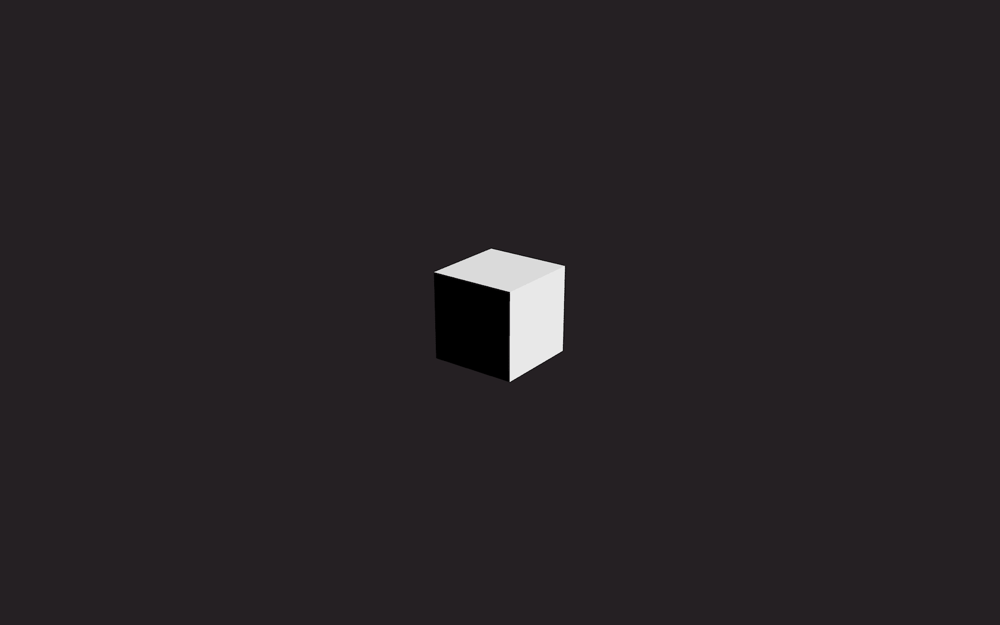
In the base project, we also had an environment map. We could instantiate a CubeTextureLoader in the Environment class, but that would mean that each class would handle resource loading on its own. We would end up with a mess in which we wouldn't know if assets were ready and they would pop on screen when they were loaded.
To make things cleaner, we are going to centralize asset loading in a dedicated class. This class will instantiate all of the loaders we need. We then send an array of assets to load and once all those assets are loaded, we make that class trigger an event.
In the /src/Experience/Utils/ folder, create a Resources class. We already know that this class is going to trigger an event which is why we can extend the EventEmitter class:
Instantiate it in the Experience class right after instantiating the scene:
For the list of assets to load, we are going to use an array. Each resource in the array will be defined by an object composed of the following properties:
name: which will be used to retrieve the loaded resources.type: in order to know what loader to use.path: the path(s) of the file(s) to load.For a bigger project, this array might get a bit fat, which is why it's preferable to have it in a separate file.
In the /src/Experience/ folder, create a sources.js file that exports the following array:
We are going to add more sources to this array later.
Now, in the Experience class, import that array and send it as a parameter to the Resources class:
And then save it as a property in the Resources class:
You should see your sources in the console.
In the Resources class, create these three properties:
items which contains the loaded resource; we will populate this property as the sources are being loaded.toLoad which contains the number of sources to load (this.sources.length).loaded which contains the number of sources loaded (starts at 0).We are now going to create the different loaders. In this project, we will need the GLTFLoader, the TextureLoader and the CubeTextureLoader. We are going to create them all at once, but you would normally have progressively added them as you worked. Don't forget to import three and the GLTFLoader:
We are not going to use a Draco compressed model, but if you want to load one, you'll need to add the DracoLoader here as well.
We are now going to create a startLoading() method. In that method, we are going to loop through the sources array and load them by using the corresponding loader:
You should see the source and the loaded resource being logged in the console as it is loaded.
On each load, we are going to call a sourceLoaded method that will save the loaded resources in the items property, update the loaded property and test if the loading is done. If all the sources are loaded, we trigger a ready event:
Nothing should happen, but now we can listen to the ready event on the Resources instance.
In the World class, retrieve the Resources instance and listen to the ready event before instantiating the Environment class:
Where and how you listen to the ready event is up to you. In this project, we are going to need the resources for every component of the world. But in other projects, you can start showing things to the user while the rest of the experience is loading and, once loaded, you can add the rest of them to the scene.
Check bruno-simon.com as an example. The graphic for the loader shows up almost immediately even if it's 3D. Then, once the rest is loaded, we can click on the button and discover the experience.
We can now retrieve the Resources instance in the environment and use the environmentMapTexture item to create the environment map:
Unfortunately, this won't work because the environment map is added after the cube and we need to inform the cube material that it needs to be updated.
Add an updateMaterials method to the environmentMap property which will traverse the scene and update materials if needed and call them right after:
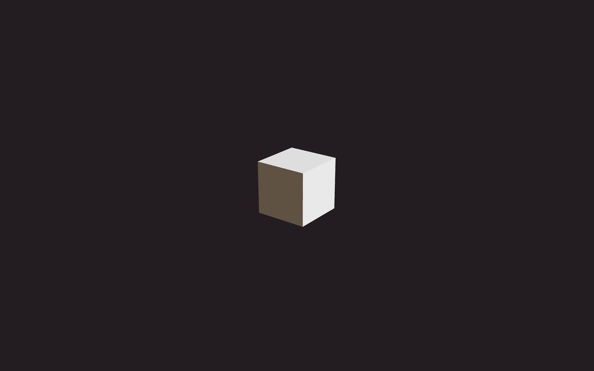
You should see the environment map affecting the dark faces of the cube which now look brighter.
Putting the scene traverse in a separate function will become handy later.
The floor will be a bit easier to add now that we have our Resources class.
First, load the two textures located in /textures/dirt/color.jpg and /textures/dirt/normal.jpg by adding them to the sources.js file:
(Do not forget the , at the end of the previous source).
Create a Floor class in the /src/Experience/World/ folder:
And then instantiate it in the World class. Make sure to do this before the Environment since the environment updates each child of the scene, and we want the floor to be in that scene when this happens:
In this example, we are going to separate each part of the floor into a separate method:
setGeometrysetTexturessetMaterialsetMeshFor the geometry, we create a CircleGeometry. Don't forget to import three:
Before setting the material, we need to do some work on the textures. We need to make them repeat and make sure that the encoding of the color texture is sRGGEncoding:
Now we can add the material:
And finally the mesh without forgetting to make sure it receives a shadow:
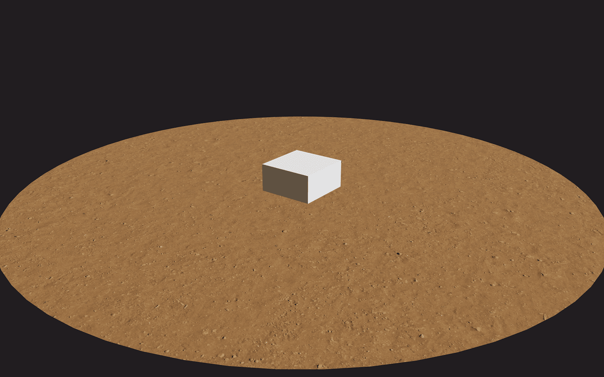
We now have a nice-looking floor and we can get rid of the box.
Don't mind the missing shadow, we will fix that later.
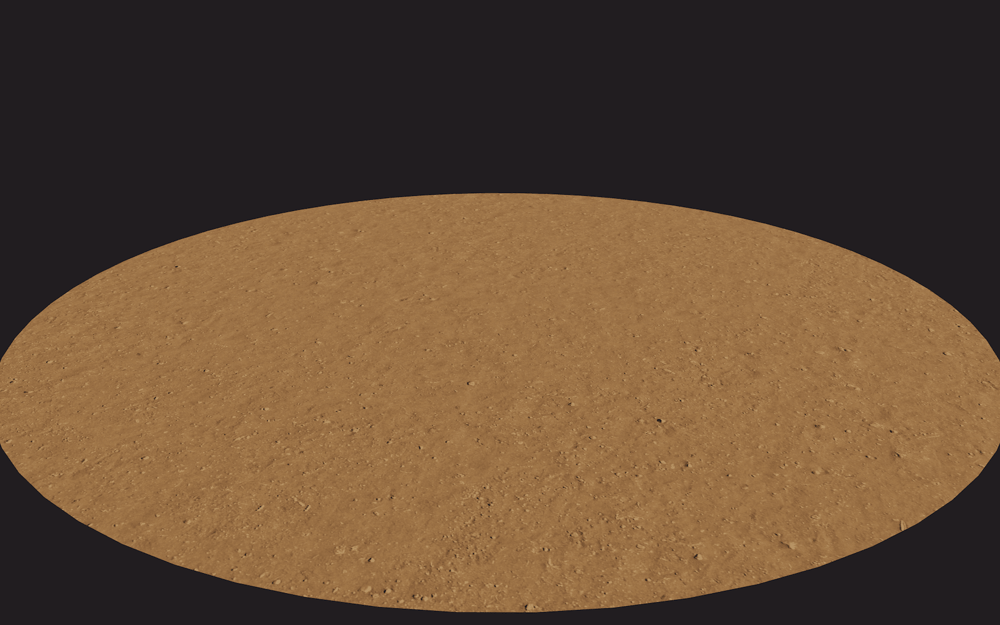
No, this is not a pancake.
The process for the fox is very similar. We are going to load the model and add it to the scene.
The difference will be with the animation.
Load the model located in /models/Fox/glTF/Fox.gltf by adding it to sources.js:
Create a Fox class in the /src/Experience/World/ folder:
And instantiate it in the World class, but make sure to do it before the Environment because the environment will update each child of the scene and we want the fox to be in that scene when it does:
In the Fox class we can fetch the resource from the Resources:
The actual model is accessible as an item called scene within our resource called foxModel. But, since we are going to need more items within that resource, we save all of it as a property.
In a separate method, save the actual model, scale it, add it to your scene and make sure that it casts shadows. Don't forget to import three:
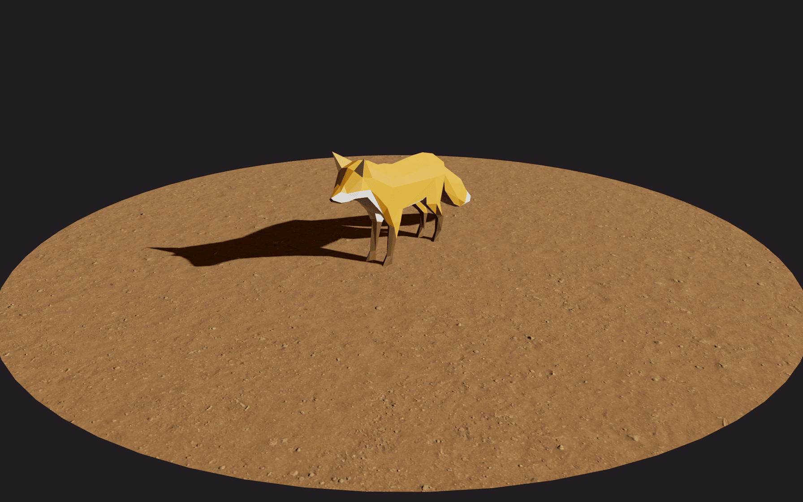
Here is our fox, but we still need to make the animation work.
Create an AnimationMixer in the Fox class and add the first animation from this.resource.animations:
This is a good start, but if you remember from one of the previous lessons, we need to update that mixer on each frame.
To do that, we are going to update the World and the World is going to update the Fox.
In the Experience class, update the World. Make sure to do it right before doing a render:
In the World, update the Fox, but first, make sure that it exists since the model might not have loaded yet:
In the Fox class, retrieve the Time class because we are going to need the elapsed time, and then create the update method in which you update the AnimationMixer:
The fox should be animated.
And it seems that we are done, but we forgot something.
We are missing a very important part, the debug UI.
Create a Debug class in /src/Experience/Utils/:
In the Experience class, instantiate it before any other class:
Instead of always having the debug UI, we are going to let the user choose to have it.
If the user has accessed the URL with #debug at the end, they will have the debug UI. Otherwise, no debug UI.
This is handy because most users will access the website without seeing the UI, but users that know what they are doing (like you as the developer) can access the UI without having to rebuild the project.
To test the presence of #debug in the URL, we can use window.location.hash:
If it's the case, we instantiate Dat.GUI in the ui property. Don't forget to import dat.gui:
Access the URL by adding #debug at the end. Be careful, when changing or adding a # to a URL, most browsers will not refresh automatically and you'll have to do it yourself.
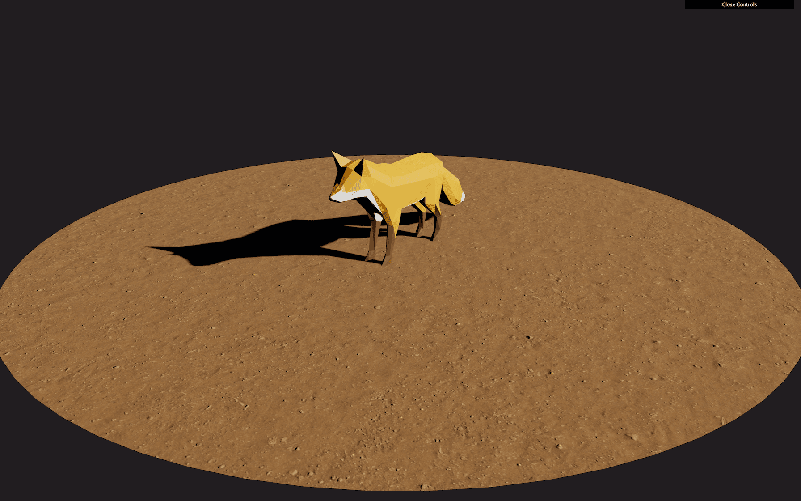
The debug UI should appear in the top right corner.
Let's start with the fox. As a little bonus, we are going to create three debug buttons that let us play the three different animations of the model.
First, in the Fox class, retrieve the Debug class and, if debug.active is true, create a folder:
In the setAnimation method, we are going to make some changes.
First, let's create all three actions available in this.resource.animations and save them in an actions property:
Then, we save one of them in the current property and play it:
We should get the same result, but now, we have access to the walking and running animations.
When playing a new animation for the model, we want a smooth transition. To do that, we can use one of the many methods available in the AnimationAction class.
We are going to use crossFadeFrom(...). This method needs to be called on the incoming action, with the previous action as the first parameter and the duration of the transition (in seconds) as the second parameter. We also need to reset and play the new animation.
We are going to put those instructions in a new method. In the animation property, create a play method:
In that play method, define the previous and the new actions:
Then, reset the new one, play it and do a crossFadeFrom(...):
Finally, save the new action in the current property, so that, next time we call our play function, it will crossfade from that action to the new one:
Theoretically, our code should work. But is there a way to test it without adding the buttons to the debug UI?
Remember that we put the experience in a global variable named experience. This means that, in the console, we can type:
And you should see the fox starting to walk.
We can now add the debug buttons to our fox debug folder.
Remember that Dat.GUI needs the value to be available as a property. Unfortunately, we can't just add the this.animation.play function to Dat.GUI because we also need to send the name of the action to play.
We are going to use a debugObject and put in three functions with each one calling this.animation.play with the corresponding parameter:
We can now test the different animations right from our debug UI.
For the purposes of this lesson and to make sure that we can use the debug UI, let's add some tweaks to the environment.
In the Environment class, retrieve the Debug and, if active, add a folder:
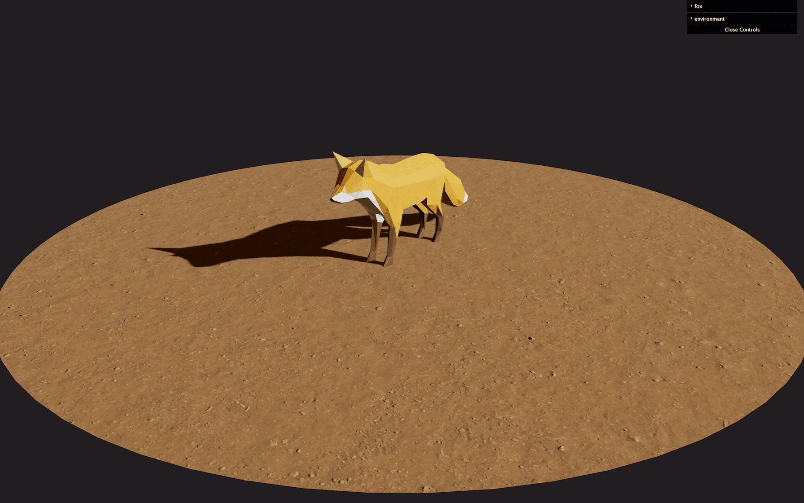
You should see the environment debug folder.
In the setEnvironment function, add a tweak for intensity to that folder and don't forget to call the this.environmentMap.updateMaterials method that we prepared earlier when the value changes:
We can now tweak the environment map intensity and all children of the scene are being updated properly.
Let's do the same with the sunLight and add tweaks to control the intensity, position.x, position.y and position.z:
We can now tweak the light.
At some point, you might need to destroy parts of your experience, or even the whole thing. It could be because the animation is done, the player moved to another level, the WebGL isn't visible anymore or maybe the fox ran away.
We could leave things as they are, but that is bad for performances. We have functions being called on each frame, we have textures on the GPU, we have listeners, etc.
In this section, we are going to destroy the whole experience and make sure to dispose of things properly.
First, let's add a destroy method to our Experience class. This method will stop listening to the Time and Sizes events with off():
off() is part of the EventEmitter class and will remove every listener attached to the instance.
To test it, we can call window.experience.destroy() in the browser console.
The animation should stop because we are not listening to the tick event anymore and our update() function isn't being called.
We are now going to traverse the scene and look for the things that we want to dispose.
First, let's use the traverse() function on the scene:
You should see every child of the scene (even children of children) being logged in the console.
If you refer to the Three.js documentation (How to dispose of objects), you will see that we need to dispose of geometries, materials, textures and then specific things like controls, passes, etc.
Here's how we are going to proceed for each child:
dispose() function on the geometry property.material property.dispose() function available on that key, call it.This way, we don't need to test every possible map of the material in order for all the textures and geometries in the scene to be disposed:
This is a very minimalist way of destroying everything in a scene. You might find that there will be exceptions within specific classes, but our attempt here is to keep things as simple as possible.
There is a bit more cleaning up to do. The camera doesn't need to be disposed, but the OrbitControls do:
The WebGLRenderer also has a dispose method and we can call it without needing to look too deeply into it.
Be careful, if you are using post-processing, you'll need to dispose of the EffectComposer, its WebGLRenderTarget and any potential passes you are using.
We are using Dat.GUI as the Debug UI which is quite easy to destroy. All we need to do is call its destroy() method, but we need to make sure that the debug is currently active before doing so:
And that's all. You can now call window.experience.destroy() in the console.
As you can see, destroying things is a bit tricky. You'll have to dive into the different components you've used and make sure you are disposing of everything properly.
We didn't remove the <canvas> and the last frame is still rendered in it, but you can remove from the page if you need.
Be aware that when we stopped listening to the Sizes and Time events, those classes will still be listening to native events. This is not a big deal, but if you are a little picky, you can also handle disposing of them as well.
One more thing to acknowledge is that we wrote everything in the same destroy() method for the sake of simplicity. If you have a more complex project with a lot to destroy, you may want to create a destroy() method for each class that needs it. This way, the experience would propagate the destroy() to its children as we did for the update() and resize() methods.
Structuring code with modules and classes might look hard and counterproductive at first, but a real-life Three.js project can end up being so huge that you better not have spaghetti code if you want to get that project done right.
Having these separate classes is also great for reusing them with other projects. Most of the Utils classes we created can be reused without doing anything to them.
Structuring code also creates a good environment in which to work with other developers and limit conflicts. Each developer can work on a specific class.
Many of the decisions we made during this lesson are specific to my personal preferences. You should work on your structure and create a template so that you can start working on a new project more quickly. Don't hesitate to share that structure with others.